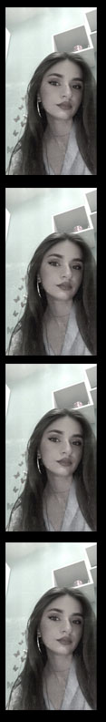
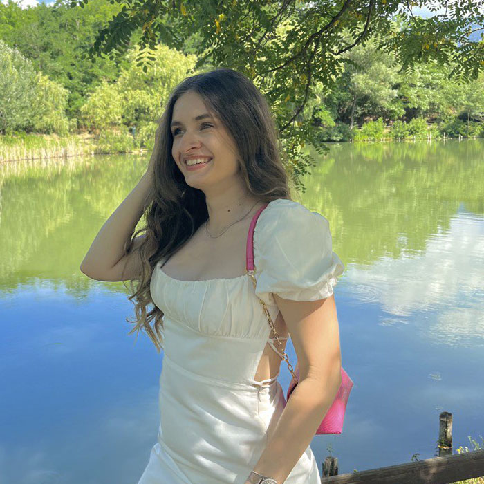
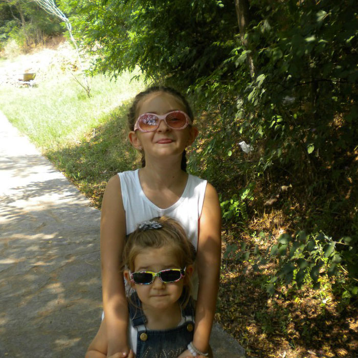

More about me
I was born on November 26th, 2003, in Skopje, Macedonia.
I'm the firstborn and probably my parents' favorite child.
Elementary school:
I started elementary school in 2009, in OOU „Goce Delcev”, Ilinden municipality. While laying the foundations of my education,
I discovered within myself my passion for writing. I finished elementary school in 2018. The next few years I dedicated my time to writting stories, and applying to
almost every writting contest out there.
High school:
From 2018 to 2022 I was studying as an economic technician in
SEPUGS „Vasil Antevski – Dren ”, Kisela Voda. During these four years of my education, I found
out that I have an outstanding ability to be a good leader. In 2021,
I won 3rd place at a state competition for a marketing plan in the following 2022 I also won
2nd place at a state competition for a marketing plan for solar backpacks.
University:
In 2022 I applied to the
Faculty of Computer Science and Engineering where I got accepted, now I am studying in
the direction Application of information technologies.
The nature or my person led me into having unhealthy amount od intrests and only a few hobbies. I'm obsessed with criminology, forensics and supernatural phenomena.
As of hobbies, recently I'm really into writting and journaling, fitness and any kind of cooking and baking.


